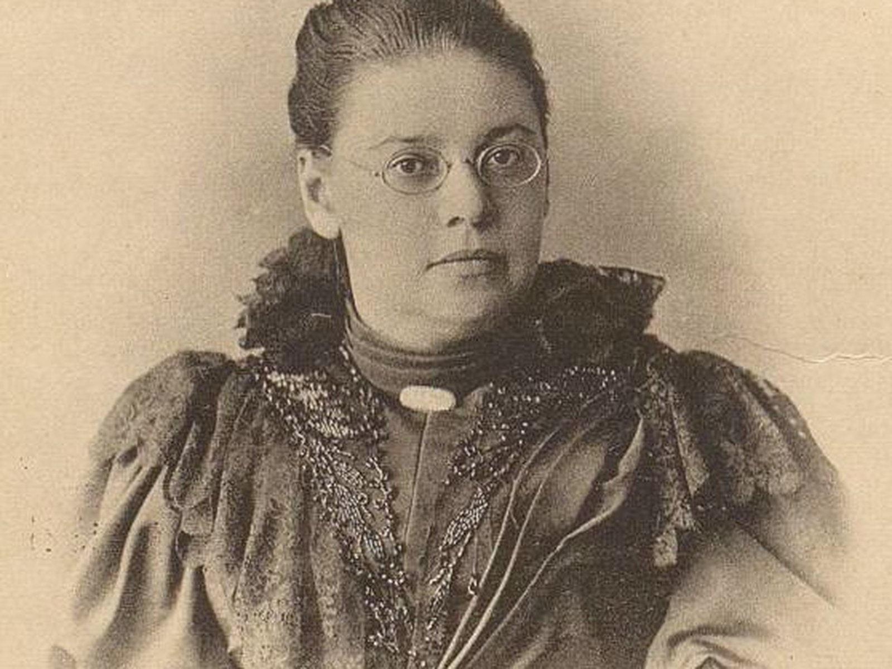

Родилась 10 декабря (22 декабря по старому стилю) 1854 года в Екатеринбурге в семье горного инженера. С детства поражала окружающих незаурядными способностями: в семь лет свободно читала по-русски и по-французски, а в двенадцать поступила сразу в третий класс Екатеринбургской женской гимназии и окончила её с успехом в шестнадцать лет. В 1877 году, ещё студенткой, ушла сестрой милосердия на Русско-турецкую войну. Стала одним из первых в России женщин-врачей и в 1886 году открыла в Перми первое в стране земское глазное отделение. За 11 лет через него прошло 30 тысяч пациентов, проведено 6305 глазных операций. Она не ограничивалась только лечебной работой. С 1888 по 1897 год преподавала глазные болезни, физику и физиологию в Пермской фельдшерской школе. Стажировалась у лучших офтальмологов Европы, публиковалась в зарубежных журналах. По её инициативе в Перми открыли училище для слепых детей с обучением по системе Брайля. Умерла в 42 года от опухоли мозга, похоронена на Егошихинском кладбище.